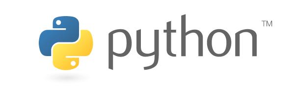

É, simples assim.

Pelo fato de eu gostar das disciplinas que compõem a área de Front End, é normal que eu enveredasse meus estudos para a linguagem JavaScript. E foi isso que aconteceu. Mas embora a linguagem seja de certa forma pequena, ela é bastante poderosa. E o fato de surgirem novas tecnologias baseadas em JS quase todo dia, e de ter uma comunidade extremamente produtiva, faz com que suas aplicações se tornem cada vez mais robustas.
Esqueça as animações e validações de campos de formulários, pra entrar num mundo de sistemas complexos e aplicações inteiras, front-end e back-end, somente com essa linguagem.
Então pelo fato de JS não ser uma prioridade pra mim, e tem me parecido um monstrengo bem difícil de matar com poucas armas e com pouco treinamento, decidi procurar uma alternativa pra estudar programação sem me sentir um bosta.
Eis que conheço um curso chamado Python para Zumbis do Fernando Masanori, e assistindo a aula introdutória me pareceu mágica. O fato de ser produtivo com uma linguagem em apenas um mês (Masanori estou acreditando em você!) me seduziu, não vou negar.
Então antes de entrar de cabeça no curso, decidi explorar a comunidade. Fui em grupos de Facebook, assisti algumas palestras e li alguns artigos, segui algumas pessoas, enfim, arrumei tanto material que agora tô meio sem saber por onde iniciar (hehe).
Bom, minha intenção nos próximos posts é ir passando minhas impressões e o que venho aprendendo com o Python.
Enquanto isso não acontece, segue abaixo uma lista de alguns materiais que compilei pra começar meus estudos. Espero que te ajude:
- Codecademy Python
- Como Pensar como um Cientista da Computação
- Python para Zumbis
- Aprendendo Python
- Python para Desenvolvedores
- Python
- Python Brasil
Quem for daqui de Recife, ou quiser vir para cá, pode participar do XL Encontro do PUG-PE. O evento promete muito conteúdo bom com a entrada sendo R$ 0,00. As palestras não foram divulgadas ainda. Você pode se inscrever aqui.
Tem um grupo no Telegram também, onde a grande maioria é iniciante. O pessoal é bacana e se ajuda muito, tanto na parte técnica, quanto na parte motivacional. Se quiser entrar me passe o número do seu telefone pra que eu possa te adicionar lá.
Bom, creio que por enquanto seja só isso. Valeu, pessoal até a próxima!